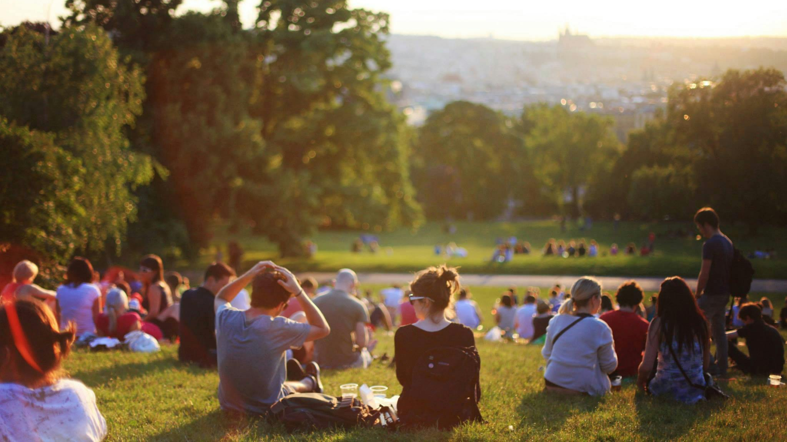

.png)
In our rapidly urbanizing world, integrating green spaces into city landscapes has never been more crucial. These verdant areas—whether parks, gardens, or green roofs—play a pivotal role in enhancing urban environments.
Urban green spaces serve as the city’s natural air purifiers. Plants and trees absorb carbon dioxide, a major greenhouse gas, and release oxygen, which is essential for life. This process helps reduce the concentration of pollutants such as nitrogen dioxide and particulate matter, which are common in urban areas due to traffic and industrial activities. By increasing the number of trees and green areas, cities can significantly improve air quality, which has been linked to reduced respiratory problems and overall better health for residents.
In addition to air purification, green spaces help capture dust and other airborne particles. This filtering effect can reduce the incidence of asthma and other respiratory conditions, making urban living more comfortable and healthier.
The urban heat island (UHI) effect is a phenomenon where urban areas experience significantly higher temperatures than their rural surroundings, primarily due to the extensive use of concrete and asphalt. Green spaces are instrumental in combating this effect. Trees and vegetation provide shade and cool the air through a process known as evapotranspiration, where plants release water vapor into the atmosphere.
Green roofs and vertical gardens also contribute to cooling urban environments. These green installations can reduce building temperatures, which in turn lowers the demand for air conditioning and reduces energy consumption. By integrating more greenery into urban design, cities can mitigate UHI effects and create more comfortable living conditions.
Access to green spaces is strongly associated with improved mental and physical health. Studies have shown that spending time in natural environments can reduce stress, anxiety, and depression. These spaces offer a respite from the fast-paced urban life, providing areas for relaxation, exercise, and social interaction.
Green spaces encourage physical activity by offering safe, attractive places for walking, jogging, and recreational sports. Regular physical activity is known to improve cardiovascular health, reduce obesity, and enhance overall well-being. Moreover, the presence of green areas fosters social connections by providing venues for community events, gatherings, and informal interactions.
Urban green spaces are vital for maintaining and promoting biodiversity. They provide essential habitats for various species of plants, birds, insects, and other wildlife. By incorporating a variety of native plants and creating diverse ecological environments, cities can support a range of species and contribute to the conservation of urban biodiversity.
Community gardens and urban parks can serve as refuges for pollinators like bees and butterflies, which are crucial for ecosystem health and food production. Moreover, green spaces help connect fragmented habitats, allowing wildlife to move and thrive within urban settings, thereby enhancing the overall ecological balance of the city.
Public parks and green spaces are more than just recreational areas; they are vital for building community connections and fostering social cohesion. These spaces serve as venues for social activities, cultural events, and recreational programs, bringing people together and strengthening neighborhood bonds.
Green spaces often host farmers' markets, outdoor concerts, festivals, and educational workshops, creating opportunities for residents to engage with one another and with their environment. By offering diverse amenities and programming, green spaces can cater to different community needs and interests, making them valuable assets in enhancing the quality of urban life.
Integrating green spaces into urban planning is essential for creating sustainable and vibrant cities. By enhancing air quality, reducing heat islands, improving well-being, promoting biodiversity, and fostering community connections, green spaces contribute to a higher quality of life for all residents. Embracing and expanding these natural areas will help us build cities that are not only more livable but also more resilient and sustainable for future generations.